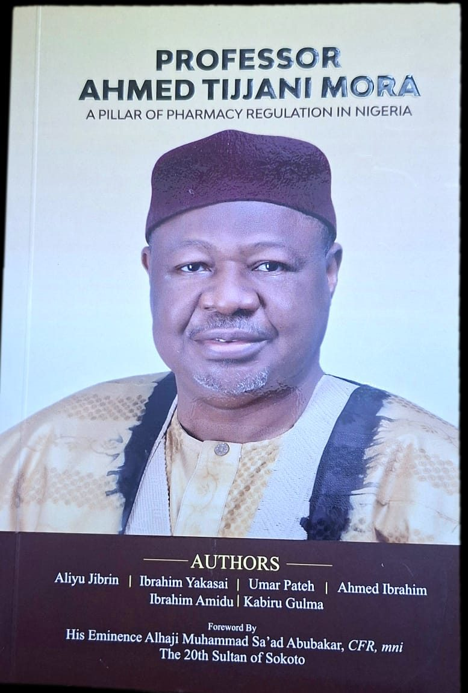
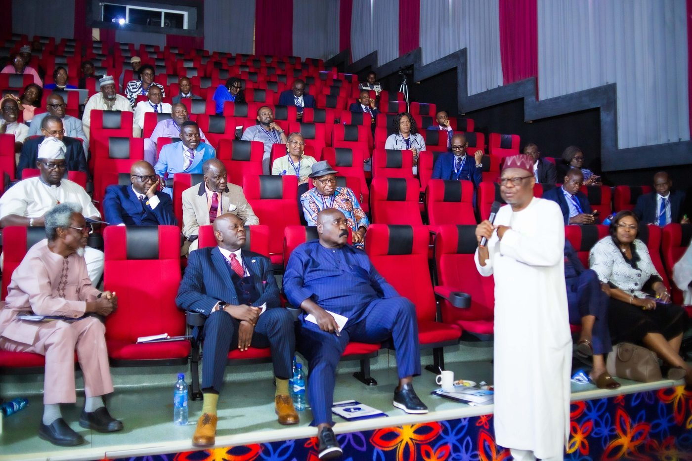
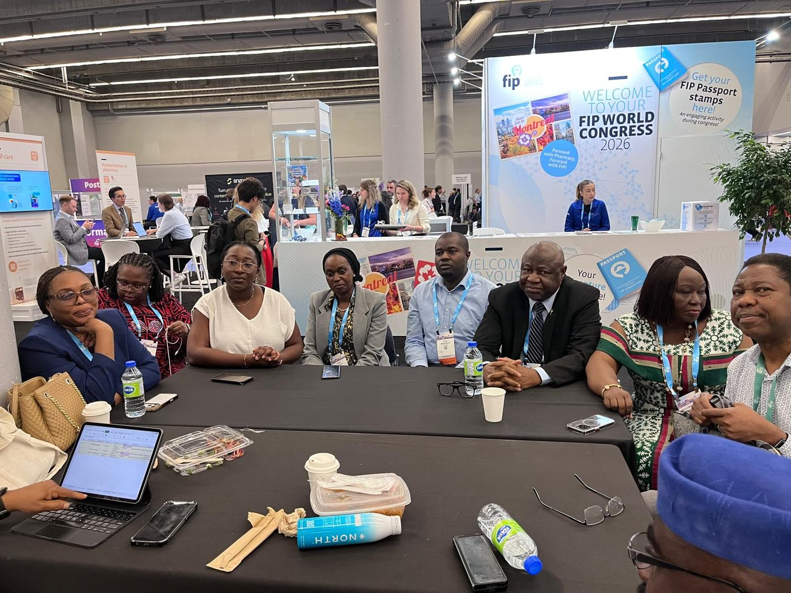
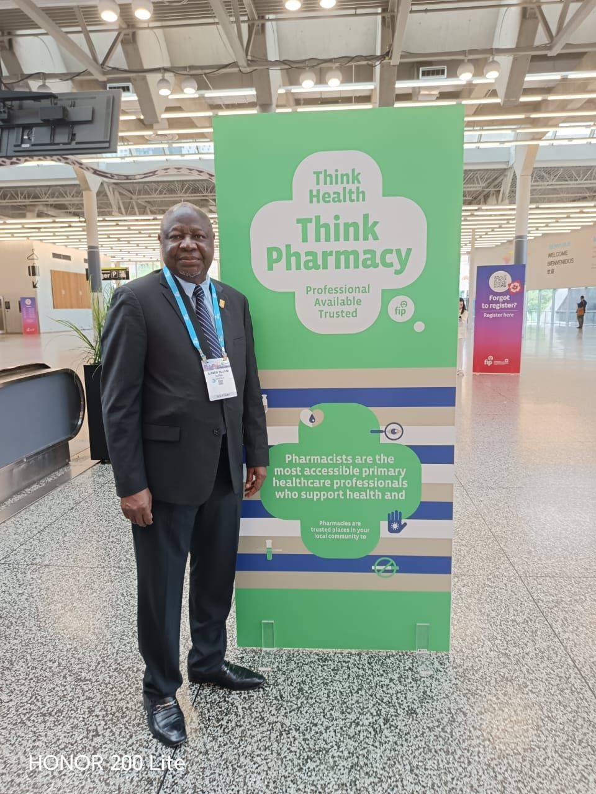
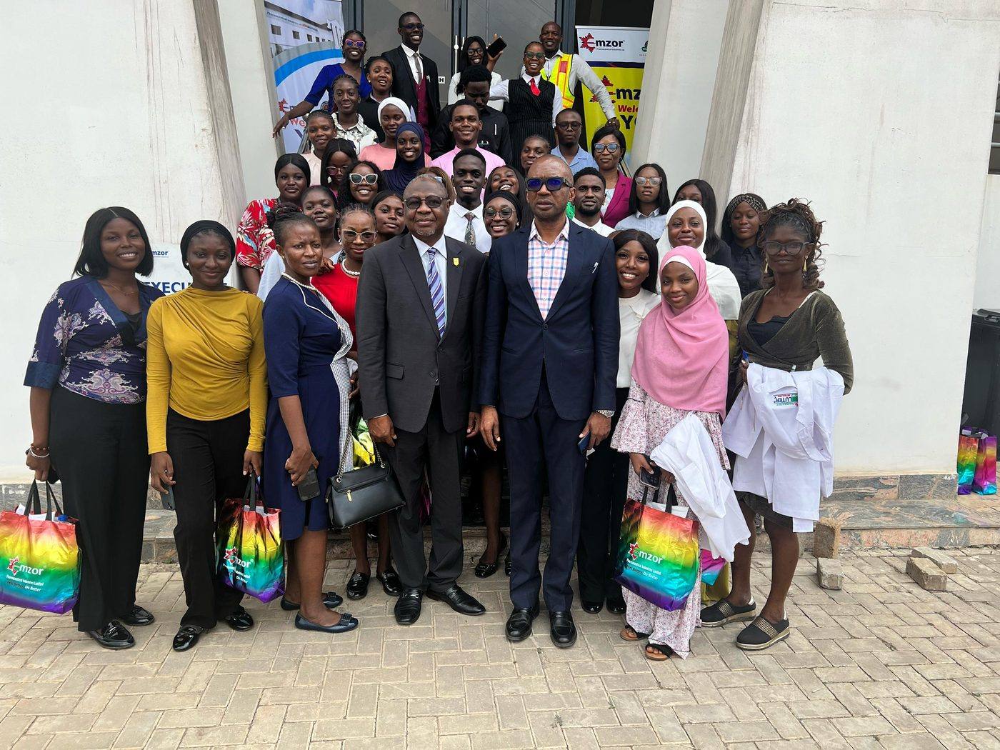

Ahmed Tijjani
Mora
Pro-Chancellor and Chairman, Governing Council of Igbinedion University, Okada. A pharmacist, regulator, and administrator whose career of five decades has shaped pharmacy practice, education, and public service across Nigeria.
A career built across every room in the profession
Professor Ahmed Tijjani Mora was born on 13 May 1956 in the historic city of Zaria, Kaduna State, into the family of the late Dr. Abdurrahman Mora, a pioneering Northern Nigerian educationist and diplomat. He was raised on Mora Road in the Tudun Wada quarter of Zaria, a neighbourhood that has produced generations of Nigeria's civil servants, professors, and public office holders.
He trained as a pharmacist at Ahmadu Bello University, and over the decades that followed he practised in every one of the profession's four core areas: hospital, community, industrial, and academic pharmacy, before rising to lead the Pharmacists Council of Nigeria as its Registrar and Chief Executive Officer, and later as Chairman of its Governing Council.
He is currently Pro-Chancellor and Chairman of the Governing Council of Igbinedion University, Okada, where he also serves as Professor of Clinical Pharmacy and Pharmacy Practice, the university's first professor in that discipline.
- Born
- 13 May 1956, Zaria, Kaduna State
- Education
- B.Sc. Pharmacy, MBA, Ph.D., Ahmadu Bello University & Usmanu Danfodiyo University
- Current role
- Pro-Chancellor & Chairman of Council, Igbinedion University, Okada
- Regulatory career
- Registrar & CEO, then Chairman of Council, Pharmacists Council of Nigeria
- National honour
- Officer of the Order of the Niger (OON), 2023
- Languages
- English, Hausa, Arabic (written)
Five decades in pharmacy, regulation, and public life
Graduates in Pharmacy
Earns his B.Sc. in Pharmacy from Ahmadu Bello University, Zaria, and interns at ABU Teaching Hospital, Kaduna, the start of a career that would return to ABU again and again, as lecturer, alumnus, and eventual Alumni Association president.
Building Kaduna State's pharmaceutical services
Serves as the first Pharmaceutical Divisional Manager of the Kaduna State Distribution Agency, then Chief Pharmacist of the Health Management Board, and later Director of Pharmaceutical Services at the State Ministry of Health.
Leading pharmaceutical manufacturing
Managing Director and CEO of Zaria Pharmaceutical Company Ltd, makers of the ZARINJECT brand of disposable syringes and needles, then the largest such plant in West Africa, followed by the same role at Zazzau Pharmaceutical Industries Ltd.
Registrar & CEO, Pharmacists Council of Nigeria
Leads the national regulator for pharmacy through a period of extensive reform: restructuring the Registry, launching Nigeria's Mandatory Continuing Professional Development programme, and strengthening inspection and monitoring standards nationwide.
Foundation Dean, Kaduna State University
Becomes the pioneer Dean of the Faculty of Pharmaceutical Sciences and founding Head of the Department of Clinical Pharmacy and Pharmacy Management at KASU.
President Worldwide, ABU Alumni Association
Leads the global alumni body of his alma mater, following years as Deputy National President, mobilising alumni resources for infrastructure, hostels, and student support back at Ahmadu Bello University.
Chairman, Governing Council, PCN
Returns to the Pharmacists Council of Nigeria, the institution he once managed day to day, this time at the helm of its governing board.
Officer of the Order of the Niger
Conferred by the President and Commander-in-Chief of the Armed Forces of the Federal Republic of Nigeria, in recognition of decades of national service.
Pro-Chancellor, Igbinedion University, Okada
Appointed Pro-Chancellor and Chairman of the Governing Council, continuing a second career in university governance alongside his professorship in Clinical Pharmacy and Pharmacy Practice.
A Pillar of Pharmacy Regulation in Nigeria
On his 70th birthday, a biography documenting his life and career, with a foreword by His Eminence the Sultan of Sokoto, is publicly presented in Kaduna.
Institutions he has led, guided, or helped rebuild
Regulatory & academic
- Pro-Chancellor & Chairman, Governing Council, Igbinedion University, Okada2025 – date
- Chairman, Governing Council, Pharmacists Council of Nigeria2020 – 2023
- Registrar & CEO, Pharmacists Council of Nigeria2003 – 2012
- Foundation Dean, Faculty of Pharmaceutical Sciences, Kaduna State University2012 – 2016
- Chairman, Committee of Registrars of Health Professions
- First & Interim Chairman, West African Pharmaceutical Manufacturers Association
Alumni & professional bodies
- President Worldwide, Ahmadu Bello University Alumni Association2015 – 2021
- Chairman, Board of Trustees, ABU Pharmacy Alumni Association2010 – date
- National Chairman, Conference of Alumni Associations of Nigerian Universities2016 – 2022
- National Chairman, Barewa Old Boys Association, 1970 intake
- Chairman, Pharmaceutical Society of Nigeria, Kaduna State Branch
- Life Patron, PANS, ABU Zaria & KASU chapters
A body of work built one lecture hall at a time

A Pillar of Pharmacy Regulation in Nigeria
Commissioned by generations of his students to mark his 70th birthday, this biography traces his life from Tudun Wada, Zaria, through four decades of pharmacy practice, regulation, and university leadership. It carries a foreword by His Eminence Alhaji Muhammad Sa'ad Abubakar, CFR, the 20th Sultan of Sokoto, and was publicly presented in Kaduna on 13 May 2026.
- The Lizard Shape Model in Drug Distribution in Nigeria, Author, 2014 & 2018
- The Contributions of Students and Alumni Associations Towards Promoting Pharmacy Education and Practice in Nigeria, Author, 2014
- Towards Achieving Our Dream for ABU, Editor, 2017
- A Compendium of Distinguished ABU Alumni, Vol. 2, Editor & Foreword, 2019
- Excellence in Pharmacy Practice Management: The Fred Adenika Legacy, Co-author, 2009
- Education for a Better Tomorrow, ZEDA Annual Lecture Compilation, Editor, 1993–2022
- The Barewa Lecture Series, Vol. II, Author, 2020
- Compendium of Minimum Standards of Pharmacy Practice in Nigeria, Editor, 2023
Recognition, national and traditional
Officer of the Order of the Niger
Conferred by the President and Commander-in-Chief of the Armed Forces of the Federal Republic of Nigeria, May 2023.
Wakilin Maganin Zazzau
Turbanned by His Highness Alhaji Shehu Idris, CFR, Emir of Zazzau, on 27 September 2013.
K'ayayen Sarkin Musulmi
Conferred by the Sultanate Council of Sokoto, recognising his service to the Muslim community.
Iyan Piriga
Held of the Piriga Kingdom, Lere Local Government Area, Kaduna State.
FPSN · FPCPharm · FICEN · FIHMN · FNIM
Fellowships of the Pharmaceutical Society of Nigeria, the West African Postgraduate College of Pharmacists, and allied professional institutes.
Distinguished Alumni Service Award
Conferred by the Ahmadu Bello University Alumni Association, Abuja, November 2024.
The written and spoken record
A working archive of lectures, regulatory papers, addresses, manuscripts and bibliographies spanning 1988 to 2025. Select any document to open it.
Policy Reforms and Regulatory Challenges in Nigeria's Pharmaceutical Sector
Lectures & AddressesThe Challenges of Health Regulation in Nigeria
Lectures & AddressesThe Challenges of Health Regulation in Nigeria (II)
Lectures & AddressesHealth Regulatory Agencies as Instruments for Professional Harmony
Lectures & AddressesThe Role of Health Regulatory Agencies in Nigeria
Lectures & AddressesThe Nigerian Pharmacist
Lectures & AddressesRegulatory Challenges Facing Pharmacy Practice in Nigeria
Lectures & AddressesText of Address to the Pharmacy Forum
Regulation & PolicyAn Overview of the Regulatory Functions of the PCN
Regulation & PolicyThe Implementation of the Regulatory Functions of the PCN
Regulation & PolicyThe Implementation of Regulatory Control Functions (Slides)
Regulation & PolicyEffective Implementation of the Consultant Pharmacy Cadre (Slides)
Regulation & PolicyEnsuring Access to Registered Pharmaceutical Products in Licensed Premises
Regulation & PolicyCode of Ethics for Pharmaceutical Inspectors
Regulation & PolicyThe Pharmacists Council of Nigeria: An Overview
Regulation & PolicyPresentation by the Registrar, Pharmacists Council of Nigeria
Regulation & PolicyAppendix: PCN Regulatory Documents
Regulation & PolicyWorkshop to Finalise the Pharmacy Curriculum
Remarks & ProceedingsRemarks at the Inauguration of the ABUPAA National Executive Committee
Remarks & ProceedingsRemarks by the Chairman, Committee of Registrars of Health Professions
Remarks & ProceedingsOpening Remarks at the Maiden Joint Meeting
Remarks & ProceedingsOpening Remarks by the Chairman
Remarks & ProceedingsRemarks by the Chairman
Remarks & ProceedingsRemarks at the Consultancy Workshop
Remarks & ProceedingsNew Year Remarks to Staff
Remarks & ProceedingsNotification Letter to Governor Uba Sani
Books & ManuscriptsThe Lizard Shape Model in Drug Distribution in Nigeria
Books & ManuscriptsThe Lizard Shape Model: Second & Third Editions
Books & ManuscriptsA Pillar of Pharmacy Regulation in Nigeria (Full Manuscript)
Books & ManuscriptsManual for Marketing in a Pharmaceutical Manufacturing Plant in Nigeria
Books & ManuscriptsPharmaceutical Marketing Manual
Books & ManuscriptsBooks Authored, Co-authored and Edited
BibliographyList of Conferences, Seminars and Workshop Papers, 1988–2025
BibliographyPharmacy Papers and Lectures, 1988–2025
BibliographyTopics of Conferences and Seminars Presented
BibliographyPharmaceutical Conferences and Seminar Topics: An Overview
BibliographySelected Papers: Chronological Edition
Biography & ProfileInternational Executive Curriculum Vitae
Biography & ProfileA Distinguished Pharmacist, Academic, Regulator and Public Servant
Biography & ProfileProfessional Profile and Career Summary
Biography & ProfileRefined Introduction: Zaria, Tudun Wada and the Mora Family
Biography & ProfileDr. Abdurrahman Mora: A Distinguished Educationist
42 documents in the archive. Papers delivered at over 400 conferences, seminars and workshops are catalogued in the bibliography volumes above.
Moments from the work



A house on Mora Road

"Education remained central to the Mora family's tradition."
His father, the late Dr. Abdurrahman Mora (1916–1997), was among the first four most educated Northern Nigerians of his generation, alongside Sir Abubakar Tafawa Balewa, and became the first Northern Nigerian to receive a United States Department of State Fellowship, in 1952. He went on to serve as Federal Permanent Secretary and as Nigeria's High Commissioner to Pakistan, before devoting his later years to founding the Zaria Educational Development Association.
Forty-two children and grandchildren of the family have since studied at Ahmadu Bello University, producing pharmacists, doctors, lawyers, and academics, a legacy that Professor Mora has carried forward through his own decades of teaching, mentorship, and alumni leadership.
In the news
- Education Monitor
- The Defender
- Education Monitor
- NAN Prwire
- Education Monitor
-
Leadership Newspaper
Guest Column: "Muhammadu Buhari: One of Nigeria's Best," 17 July 2025
- The Defender